Esta guía está orientada a usuarios responsables de la gestión académica sin conocimientos técnicos previos. Los apartados marcados con Avanzado están dirigidos al personal de soporte y no son necesarios para el uso cotidiano.
1. Introducción al manual
Este manual describe el uso de la herramienta de gestión de movilidad académica desarrollada para la Escuela Superior de Ingeniería Informática de Albacete (ESIIAB), cubriendo el proceso completo desde la instalación inicial hasta la explotación de los datos mediante visualización geográfica y exportación de informes.
Cómo leer este manual
El manual sigue el flujo natural de uso de la aplicación. Se recomienda leerlo en orden la primera vez; los usuarios que ya tengan el sistema instalado pueden ir directamente al apartado de Interfaz y navegación.
- Requisitos previos: sistema operativo, permisos necesarios y archivos que conviene tener preparados antes de instalar.
- Instalación y configuración inicial: cómo obtener el software, ejecutar el instalador y configurar la fuente de datos Excel por primera vez.
- Interfaz y navegación: descripción de los elementos comunes de la pantalla y cómo moverse entre los módulos.
- Módulos principales:
- Visualización geográfica: mapa interactivo, filtros y acceso a la información por universidad y alumno.
- Gestión de estudiantes: creación, edición y eliminación de registros.
- Estadísticas y exportación: gráficas resumen y descarga de datos a Excel.
- Problemas frecuentes: soluciones a los errores más habituales.
- Apéndice técnico Avanzado: estructura de archivos en disco y acceso a los registros de actividad.
Inicio rápido
Si es la primera vez que usa la aplicación, estos cinco pasos son suficientes para empezar:
Si algo no funciona como se espera, consulta el apartado Problemas frecuentes.
2. Requisitos previos
Antes de instalar y usar la aplicación, comprueba que se cumplen los siguientes requisitos:
- Sistema operativo: Windows 10 (versión 1903 o posterior) o Windows 11. La aplicación no es compatible con macOS ni Linux.
- Permisos: cuenta de usuario con permisos para instalar aplicaciones desde la Microsoft Store o para ejecutar archivos
.exedescargados. No se requieren permisos de administrador del sistema. - Dependencias externas: ninguna. La aplicación incorpora un entorno Python embebido (versión 3.12) y no requiere instalar Python, Node.js ni ninguna otra herramienta adicional.
- Conexión a Internet: necesaria únicamente durante el primer arranque para la geocodificación de coordenadas de las universidades. Los usos posteriores pueden realizarse sin conexión.
- Archivos Excel: antes del primer uso en producción, conviene tener preparados los tres archivos Excel institucionales (Erasmus OUT, Erasmus IN y SICUE OUT). Si aún no se dispone de ellos, puede usarse la versión de demostración.
3. Instalación y configuración inicial
El software puede obtenerse desde dos canales oficiales:
- Microsoft Store (recomendado): instalación directa, con actualizaciones automáticas y sin avisos de seguridad.
- GitHub Releases: descarga de instaladores desde la página de Releases del repositorio oficial.
La aplicación se distribuye en dos variantes:
- Versión con datos de demostración: incluye estudiantes ficticios para explorar todas las funcionalidades sin datos reales. Indicada para formación de nuevo personal.
- Versión limpia (producción): sin datos precargados. Es la opción adecuada para el despliegue real.
Instalación desde la Microsoft Store (recomendado)
- Abra la Microsoft Store desde el menú Inicio.
- Busque «MovilidadESII» y seleccione la aplicación en los resultados.
- Haga clic en Obtener. Windows descargará e instalará la aplicación sin necesidad de confirmar avisos de seguridad.
- Una vez finalizada la instalación, la aplicación aparecerá en el menú Inicio.
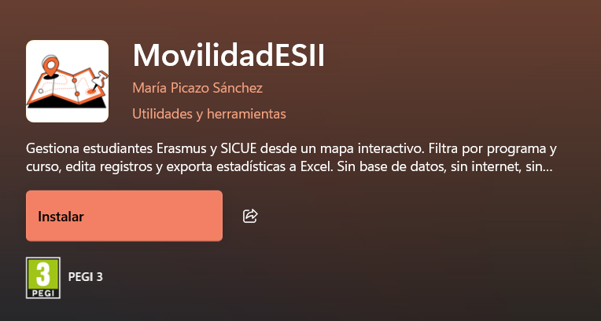
Instalación desde GitHub Releases (opción alternativa)
Esta opción es útil en entornos sin acceso a la Microsoft Store o para instalar una versión concreta con fines de prueba.
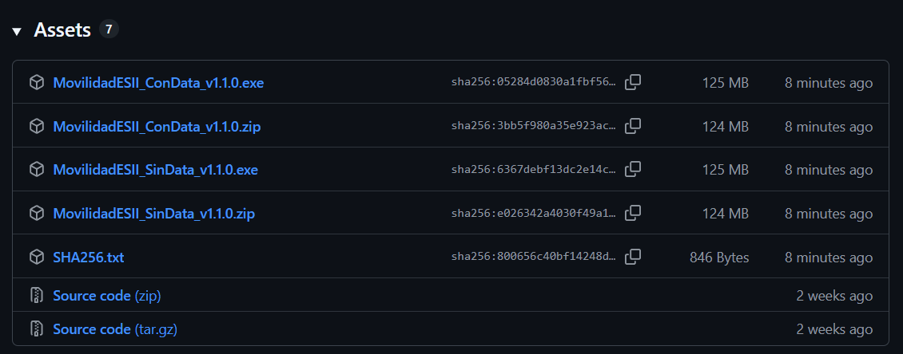
- Descargue el instalador correspondiente desde la página de Releases.
- Haga doble clic sobre el archivo
.exedescargado. - Si Windows muestra un aviso de SmartScreen, descargue la aplicación directamente desde la Microsoft Store.
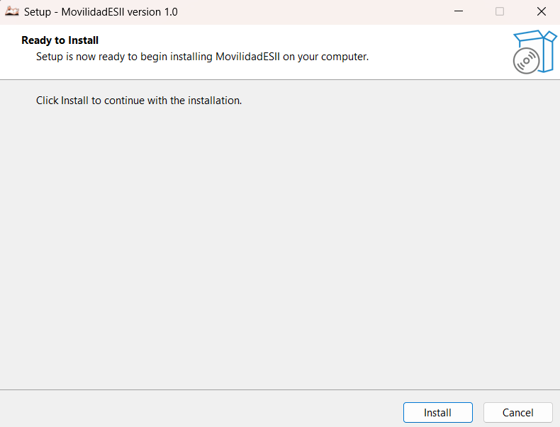
Haga clic en Instalar para iniciar la descarga e instalación.
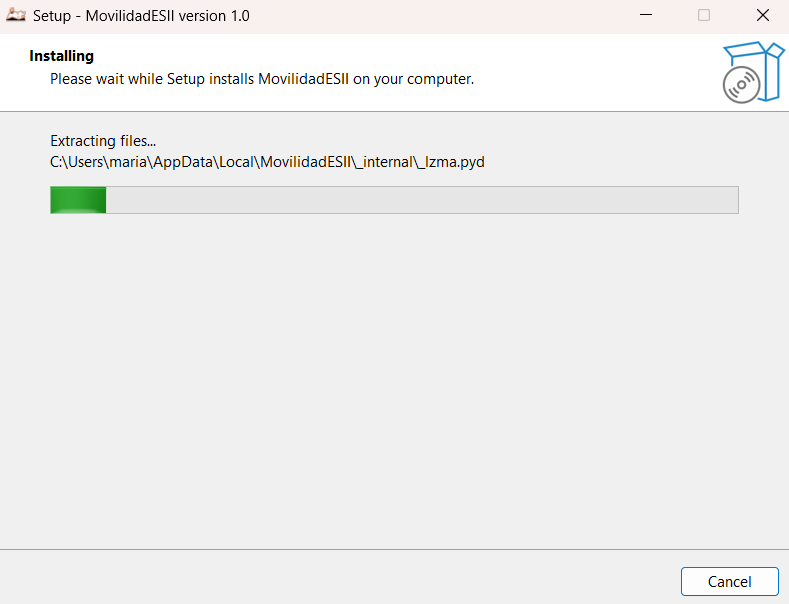
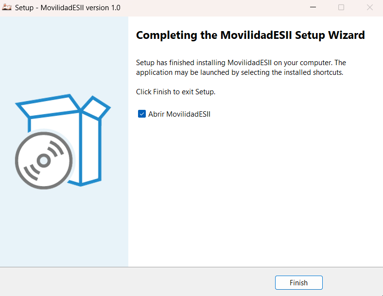
El resultado final es idéntico al de la instalación desde la Store: se crea un acceso directo en el menú Inicio.
Primer lanzamiento y verificación
Haga doble clic en el acceso directo del menú Inicio. Durante el arranque, la herramienta realizará automáticamente las siguientes acciones:
- Verificará que no haya otra instancia ya en ejecución. Si la aplicación ya está abierta, se traerá la ventana existente al primer plano.
- Reservará dos puertos libres del sistema para la interfaz web y el microservicio de persistencia.
- Lanzará el microservicio Flask en segundo plano.
- Abrirá la ventana con la interfaz lista para usar.
El arranque completo tarda habitualmente entre 5 y 15 segundos. Si tras 30 segundos la ventana no aparece, consulte Problemas frecuentes.
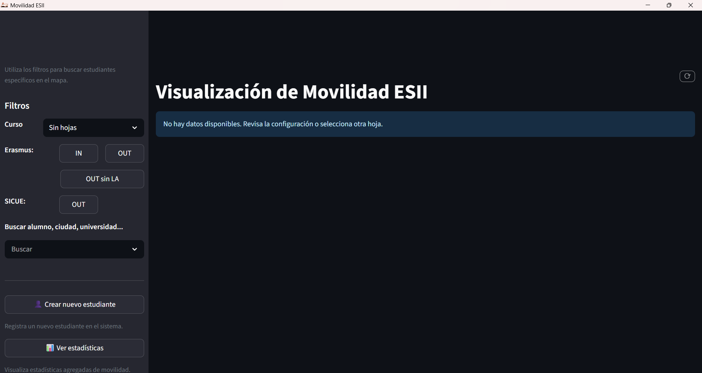
Configuración de la fuente de datos (Excel)
La herramienta almacena todos los datos de estudiantes en archivos Excel institucionales. Antes de comenzar a trabajar en producción, es necesario indicarle a la aplicación dónde se encuentran dichos archivos.
Estructura requerida de los archivos Excel
La aplicación espera tres archivos Excel independientes, uno por cada programa de movilidad.
Cada archivo contiene una hoja por curso académico (por ejemplo, 2024-25, 2023-24, etc.).
Los campos mínimos obligatorios para que la aplicación pueda leer un registro son Nombre y Universidad, comunes a todos los programas.
En Erasmus IN también es obligatoria la columna Asignatura / Estancia de investigación.
Además, en Erasmus OUT y Erasmus IN es obligatoria una hoja llamada Coordenadas con las columnas Universidad y Coordenadas.
Para una descripción visual completa de la estructura consulta la página de estructura Excel por modalidad.
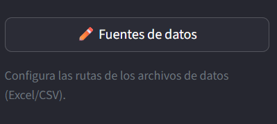
Selección de la ruta de datos en la interfaz
Una vez preparados los archivos Excel, siga estos pasos para vincularlos:
- Acceda a Fuente de Datos desde la barra lateral.
- Para cada programa (Erasmus OUT, Erasmus IN, SICUE OUT), haga clic en Seleccionar archivo y navegue hasta el archivo Excel correspondiente.
- La ruta queda guardada automáticamente y se restaurará en cada reinicio de la aplicación.
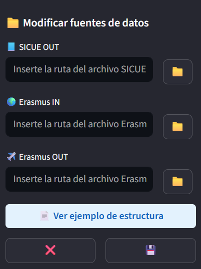
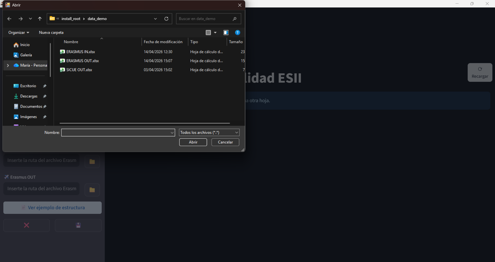
4. Interfaz general y navegación
Al iniciar la aplicación, la pantalla principal muestra el módulo de visualización geográfica. La interfaz se divide en dos áreas: la barra lateral de control a la izquierda y el mapa interactivo que ocupa el resto de la pantalla.
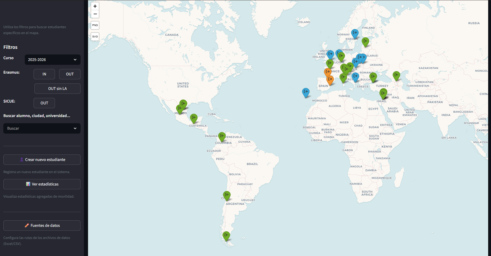
La barra lateral de control
La barra lateral agrupa los controles principales y permanece visible en todas las vistas.
Navegación: mapa / estadísticas / nuevo estudiante
En la parte superior se encuentran los tres botones de navegación principal:
- Mapa: accede al módulo de visualización geográfica (vista por defecto).
- Estadísticas: abre el panel de gráficas y exportación.
- Nuevo Estudiante: muestra el formulario de alta de un nuevo registro.
Selector de curso académico (filtro global)
El selector de curso académico es un menú desplegable que actúa como filtro global. Al cambiar el curso, tanto el mapa como las estadísticas se actualizan automáticamente para mostrar únicamente los datos del período seleccionado. La selección se guarda entre sesiones.
Botón «Fuentes de datos»
El botón Fuentes de datos abre en el explorador de archivos la carpeta que contiene los Excel configurados, facilitando su edición manual cuando sea necesario. Tras editar y guardar el Excel, utilice el botón de recarga (icono de flecha circular en la cabecera del mapa) para que la aplicación cargue los datos actualizados.
Botón de ajustes
El botón de Ajustes abre un menú desplegable con opciones de configuración global, entre ellas la posibilidad de definir el comportamiento de la aplicación al pulsar el botón de cierre.
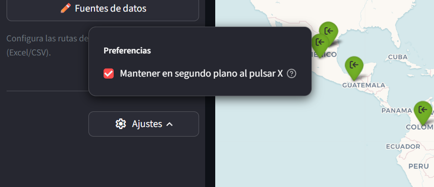
5. Módulo de visualización geográfica
Controles del mapa y navegación
- Zoom: rueda del ratón con
Ctrlpulsado, o botones+/-de la esquina superior izquierda. Para restablecer el zoom por defecto, pulseCtrl+0. - Desplazamiento: clic y arrastre con el botón izquierdo del ratón.
- Recargar datos: el botón de recarga circular de la cabecera fuerza una nueva lectura de los archivos Excel. Úselo tras modificar manualmente algún archivo fuente.
El nivel de zoom y la posición del mapa se guardan automáticamente al cerrar la aplicación.
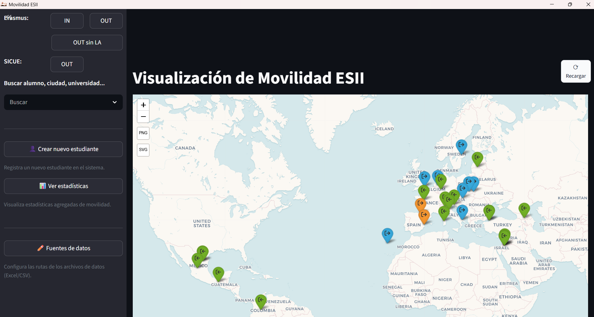
Sistema de filtros del mapa
Filtros por modalidad
Tres botones de alternancia permiten activar o desactivar de forma independiente cada programa:
- Erasmus OUT: estudiantes de la ESIIAB en universidades europeas.
- Erasmus IN: estudiantes europeos acogidos en la ESIIAB.
- SICUE OUT: estudiantes de la ESIIAB en universidades españolas.
Existe también un filtro específico para Erasmus OUT sin LA firmado, que resalta los estudiantes que aún no tienen el Learning Agreement completado.
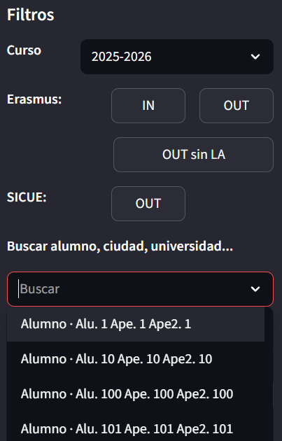
Interacción entre filtros
El selector de curso y los filtros de modalidad actúan conjuntamente: el mapa muestra únicamente los estudiantes que cumplen simultáneamente el curso seleccionado y las modalidades activas.
El campo de búsqueda textual es compatible con todos los demás filtros: permite buscar por nombre, apellidos, correo, universidad, país o ciudad.
Limpiar filtros
Para restablecer todos los filtros a su estado por defecto (todos los programas activos, sin búsqueda textual), haga clic en Limpiar filtros en la barra lateral. El selector de curso académico no se modifica con esta acción.
Leyenda y marcadores
Significado de los colores de los marcadores en el mapa:
Cuando en una misma universidad coinciden estudiantes de distintas modalidades, el marcador muestra el color de la modalidad mayoritaria y el número total de estudiantes.
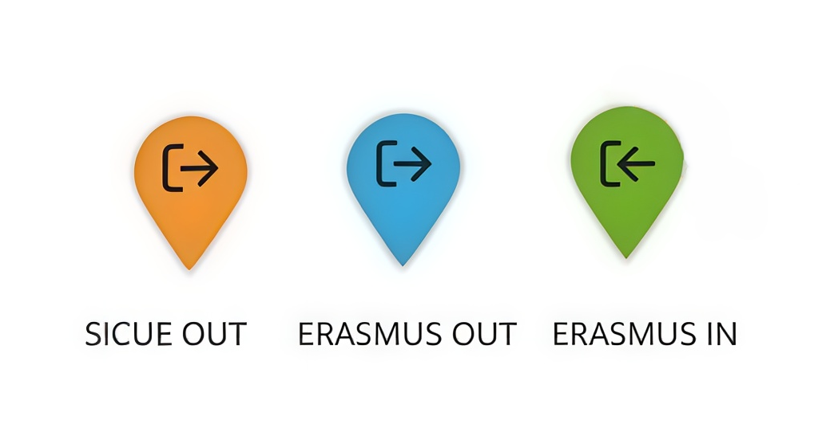
La cabecera de la interfaz muestra un contador de alumnos que indica cuántos registros están representados en el mapa en función de los filtros activos. Se actualiza en tiempo real.
Interacción con los popups de universidad
Al hacer clic sobre un marcador, se abre un popup con información detallada de la universidad y los estudiantes asociados.
Listado de alumnos agrupados
La parte superior muestra el nombre de la universidad, la ciudad y el país. A continuación aparece el listado de estudiantes con su nombre, programa y curso académico.
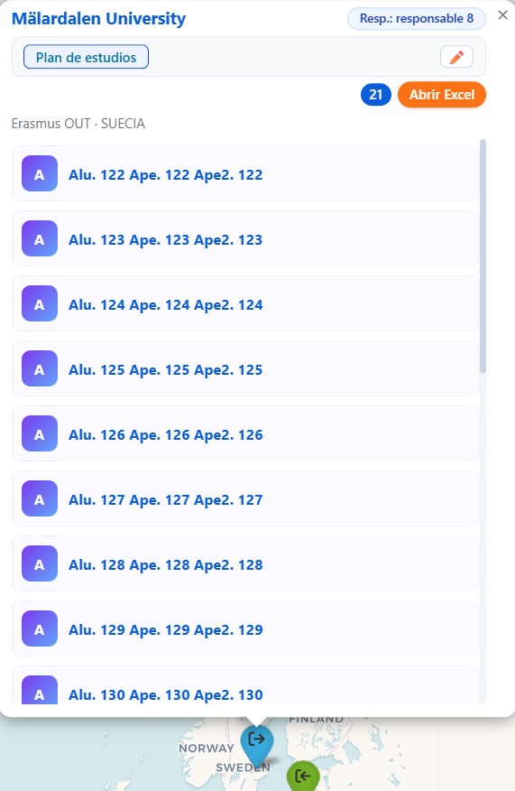
Datos del responsable académico
Si la universidad tiene asociado un coordinador, sus datos de contacto (nombre y correo) aparecen en una sección destacada del popup.
Desplegable de información detallada del alumno
Cada entrada del listado incluye un desplegable con todos los campos del registro según la modalidad:
- Erasmus OUT: Learning Agreement (con enlace), Transcript of Records, acta de equivalencias, curso, duración y plan de estudios de la universidad de destino.
- Erasmus IN: Learning Agreement, estado de la firma, asignaturas asociadas, indicador de investigación.
- SICUE OUT: Learning Agreement, estado de las firmas, plan de estudios (con enlace), coordinador de destino.
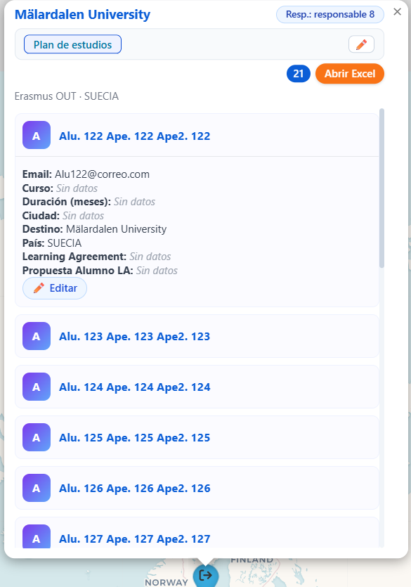
Acceso al plan de estudios (Erasmus OUT)
Los registros de Erasmus OUT incluyen un botón de acceso al plan de estudios de la universidad de destino:
- Con enlace disponible: el botón está activo y abre el plan de estudios en el navegador.
- Sin enlace: el botón aparece deshabilitado, pero puede introducirse el enlace activando el modo de edición inline.
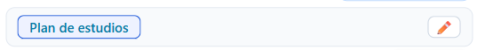
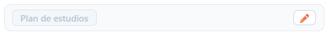
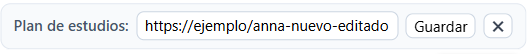
Edición de datos de un alumno (inline)
Dentro del popup es posible editar los datos de un alumno sin abandonar la vista del mapa:
- Expanda el desplegable del alumno que desea modificar.
- Haga clic en el botón Editar (icono de lápiz).
- Los campos se convertirán en formularios editables.
- Realice los cambios y haga clic en Guardar. Los datos se escribirán en el archivo Excel.
- Para cancelar sin guardar, haga clic en Cancelar.
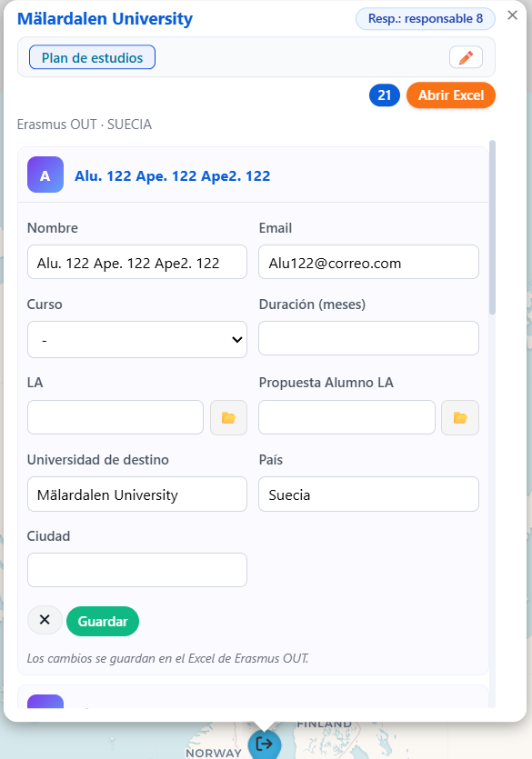
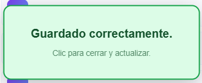
Exportación del mapa
Haga clic en Exportar mapa en la barra lateral para generar una imagen estática con las localizaciones activas. Los formatos disponibles son:
- PNG: imagen rasterizada, adecuada para documentos Word, correos o presentaciones.
- SVG: imagen vectorial, indicada para impresión o edición posterior.
La imagen incluye la leyenda y refleja únicamente los filtros activos en el momento de la exportación. El archivo se descarga en la carpeta de descargas predeterminada.
6. Módulo de gestión de estudiantes
Creación de un nuevo estudiante
Haga clic en Nuevo Estudiante en la barra lateral. Se abrirá un formulario de alta adaptado al tipo de movilidad seleccionado.
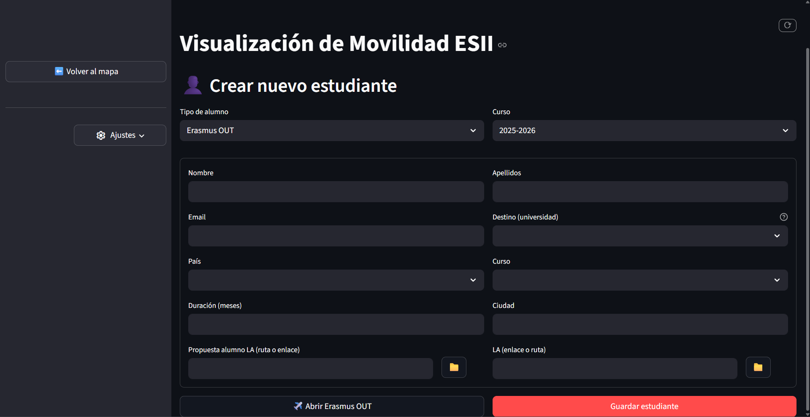
Tipos de movilidad soportados
- Erasmus OUT: estudiante de la ESIIAB que sale a una universidad europea. Requiere país, ciudad y universidad de destino, con sugerencias autocompletadas a partir del catálogo de universidades socias.
- Erasmus IN: estudiante europeo que llega a la ESIIAB. Incluye campos para las asignaturas matriculadas con sugerencias del catálogo de la escuela.
- SICUE OUT: estudiante de la ESIIAB que sale a una universidad española. La ciudad de destino se selecciona de una lista predefinida.
- Erasmus IN Investigación: variante del Erasmus IN para estancias de investigación, con campos específicos para el grupo y proyecto de investigación acogedor.
Campos obligatorios y validación
Los campos marcados con asterisco (*) son obligatorios. Los campos mínimos comunes a todos los tipos son nombre y apellidos del estudiante y universidad de destino u origen.
- Para los programas Erasmus (IN y OUT) también se requiere el país.
- Para SICUE OUT, la ciudad de destino y al menos una asignatura.
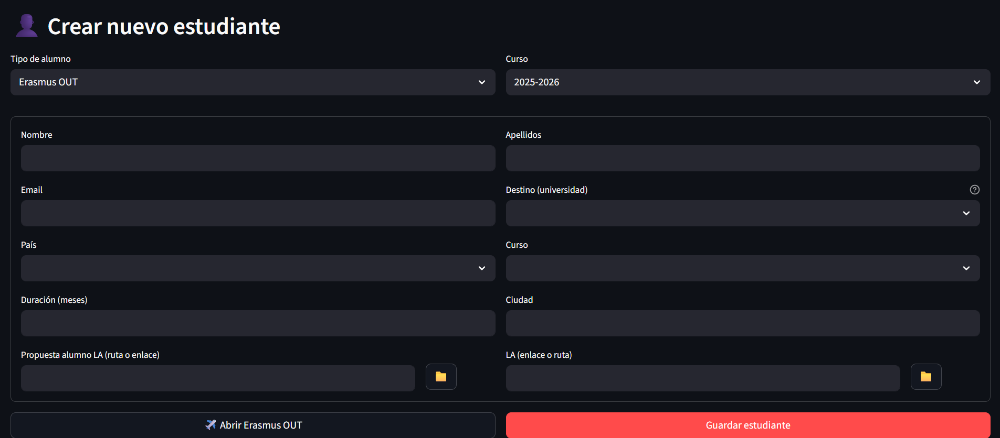
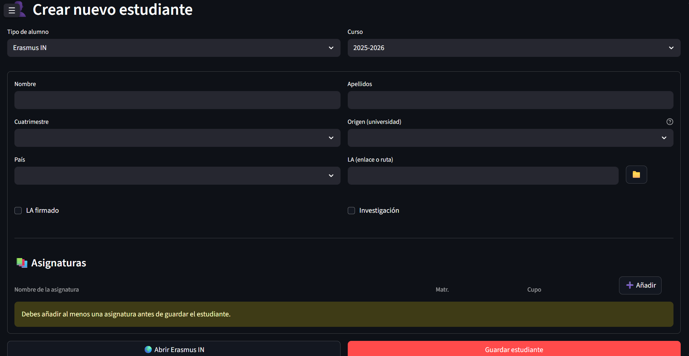
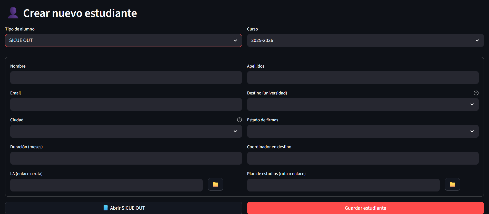
Mensajes de error comunes al guardar
| Mensaje de error | Causa |
|---|---|
| «El nombre del estudiante es obligatorio» | El campo de nombre o apellidos está vacío. |
| «Debe seleccionar una universidad de destino» | No se ha elegido ninguna universidad del listado de sugerencias. |
| «Debe añadir al menos una asignatura» | Aplica a SICUE OUT; el listado de asignaturas está vacío. |
Edición de estudiantes existentes
Los datos de un estudiante registrado pueden modificarse de dos formas:
- Desde el popup del mapa (recomendado): localice al estudiante en el mapa, abra su popup y use el flujo de edición inline. Es el método más cómodo para modificaciones puntuales.
- Editando directamente el Excel fuente: abra el archivo Excel (botón Fuentes de datos), localice la fila del estudiante en la hoja del curso correcto, modifique los valores y guarde el archivo. A continuación, use el botón de recarga para refrescar los datos.
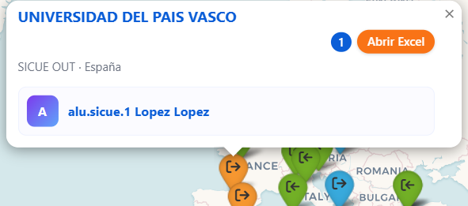
Eliminación de estudiantes
La eliminación de registros no está disponible directamente desde la interfaz para evitar borrados accidentales. Para eliminar un estudiante:
- Haga clic en Fuentes de datos para abrir la carpeta de datos.
- Abra el archivo Excel del programa correspondiente.
- Navegue a la hoja del curso correcto, localice la fila del estudiante y elimínela.
- Guarde el archivo Excel y use el botón de recarga en la aplicación para reflejar los cambios.
7. Módulo de estadísticas y exportación de datos
Acceso a la vista de estadísticas
Haga clic en Estadísticas en la barra lateral. La vista mostrará las métricas correspondientes al curso académico seleccionado en el filtro global.
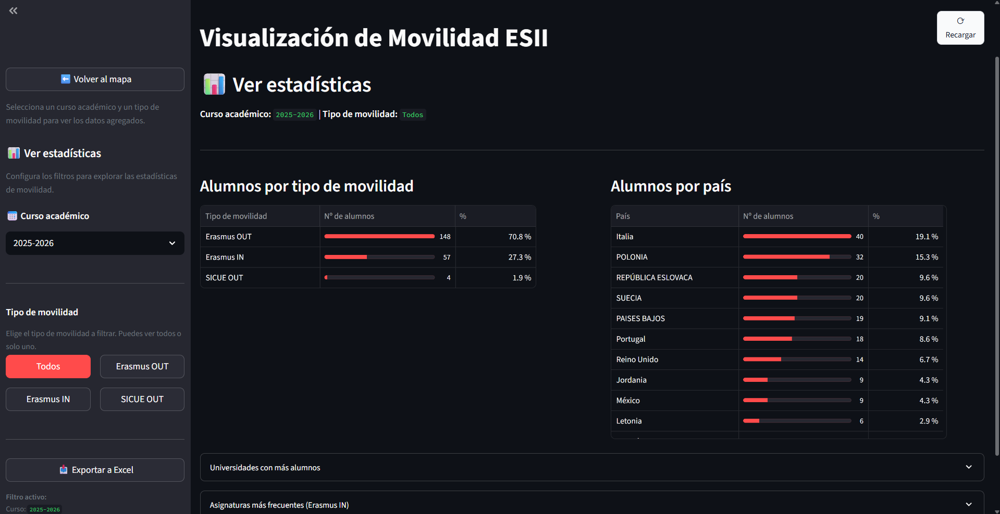
Filtros del panel de estadísticas
El panel dispone de controles propios, independientes de los filtros del mapa:
- Selector de curso académico: hereda el valor del filtro global, pero puede modificarse de forma independiente sin afectar al mapa.
- Selector de modalidad: permite ver las métricas de un único programa o de todos a la vez.
Las selecciones se mantienen entre sesiones.
Gráficas y tablas resumen
El panel muestra las siguientes métricas, cada una con un gráfico de barras y una tabla con valores absolutos y porcentajes:
- Estudiantes por país (Erasmus OUT y IN): distribución geográfica de destinos u orígenes.
- Universidades con más estudiantes (Erasmus OUT y IN): ranking de centros socios.
- Estudiantes por ciudad (Erasmus OUT y SICUE OUT): distribución de destinos por ciudad.
- Asignaturas más frecuentes (Erasmus IN): asignaturas de la ESIIAB con mayor demanda entre estudiantes entrantes.
Exportación de datos a Excel
El botón Exportar a Excel genera un archivo .xlsx con los datos visibles según los filtros activos.
El archivo contiene una hoja independiente por cada métrica.
Si alguna métrica presenta advertencias de calidad de datos, se añade automáticamente una hoja adicional denominada Advertencias.
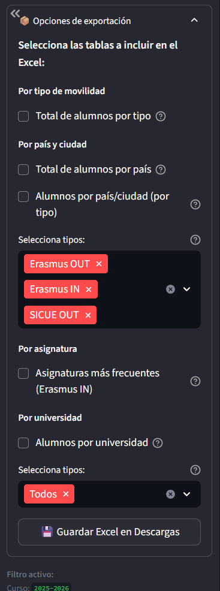
8. Problemas frecuentes
El mapa no carga o aparece en gris
- Datos no configurados: verifique que las rutas a los Excel están configuradas (ver Configurar Excel).
- Curso sin registros: compruebe que el curso seleccionado tiene datos en los archivos Excel. Pruebe a cambiar el selector a otro curso.
- Todos los filtros desactivados: asegúrese de que al menos un botón de modalidad está activo.
- Problema de arranque: cierre la aplicación, espere 10 segundos y vuelva a abrirla. Si persiste, consulte
launcher.log(ver Apéndice técnico).
Error al guardar: «Falta campo obligatorio»
- Asegúrese de que los campos de nombre y apellidos no están vacíos.
- Para Erasmus (IN y OUT), confirme que se ha seleccionado un país del desplegable, no introducido como texto libre.
- Para SICUE OUT, compruebe que se ha añadido al menos una asignatura.
- Para todos los tipos, verifique que se ha seleccionado una universidad de las sugerencias del autocompletado.
Si el error persiste, consulte api.log para obtener el detalle técnico (ver Apéndice técnico).
El mapa carga pero no muestra marcadores
- Filtros demasiado restrictivos: compruebe que la combinación de curso y modalidades activas corresponde a datos existentes.
- Búsqueda textual activa: borre el campo de búsqueda y compruebe si reaparecen los marcadores.
- Fallo en la geocodificación: si no había conexión a Internet en el primer arranque, las coordenadas no se pudieron obtener. En ese caso, los estudiantes sí serán visibles en el panel de estadísticas. Para resolverlo, conéctese a Internet y reinicie la aplicación.
9. Apéndice técnico Avanzado
Este apartado está dirigido al personal de soporte técnico. El usuario habitual no necesita consultarlo salvo ante incidencias que requieran diagnóstico avanzado.
Contacto con el servicio técnico
Si los pasos descritos en Problemas frecuentes no resuelven el problema, puede abrir una incidencia directamente en el canal oficial de soporte técnico a través de GitHub Discussions:
Para que la incidencia pueda atenderse con la mayor rapidez posible, incluya en su mensaje:
- Una descripción del problema: qué acción estaba realizando y qué ocurrió.
- El sistema operativo y la versión de Windows (Windows 10 o Windows 11).
- El canal de instalación utilizado (Microsoft Store o instalador desde GitHub).
- El contenido de los archivos
launcher.logyapi.logdel período en que se produjo el problema.
Acceso e interpretación de los archivos de registro
Ubicación
Los archivos de registro se encuentran en:
Para acceder rápidamente, pulse Win+R, escriba la ruta anterior y pulse Enter.
Interpretación de launcher.log y api.log
launcher.log: registra el ciclo de vida del proceso principal (arranque, asignación de puertos, señales de cierre). Es el primer archivo a consultar si la aplicación no arranca o se cierra inesperadamente.api.log: registra todas las operaciones de lectura y escritura del microservicio de persistencia. Contiene el detalle de los errores de validación, los fallos de escritura en Excel y los intentos de acceso no autorizados.
Para reportar una incidencia, adjunte el contenido de ambos archivos del período en que se produjo el problema.